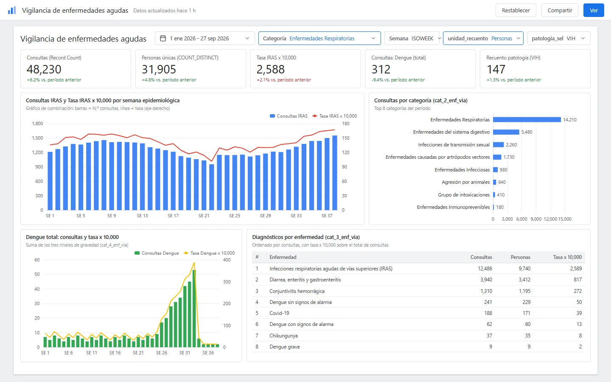
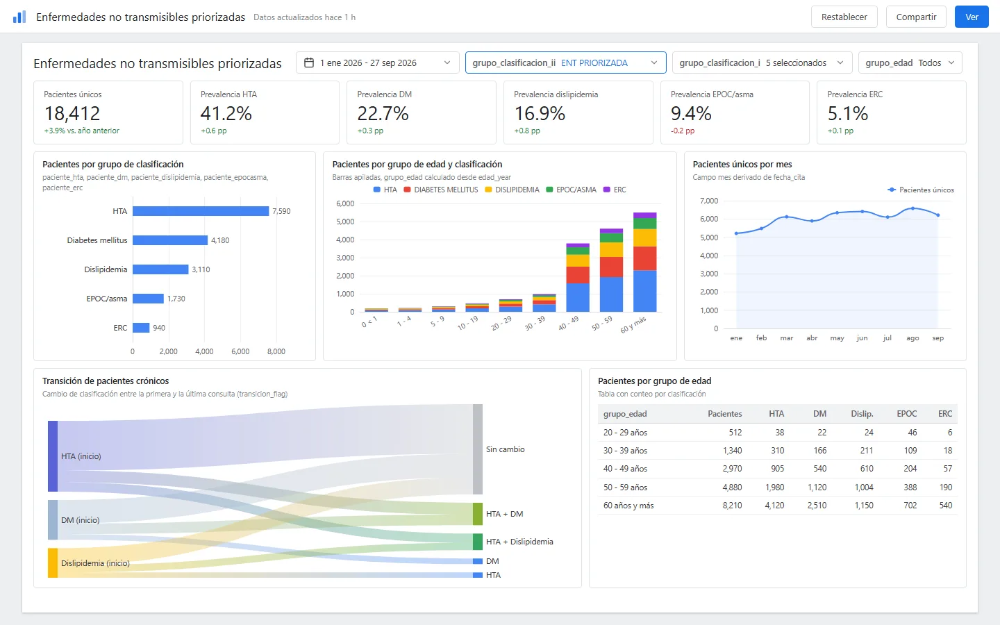
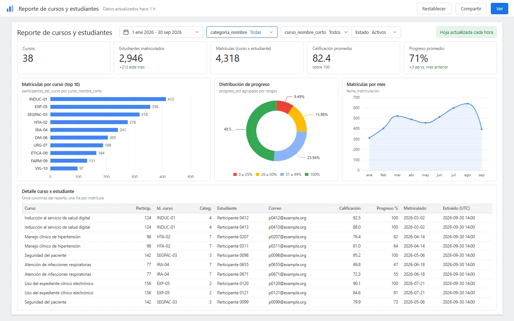

Looker Studio reporting
Self-service dashboards and a versioned written report for an epidemiology unit, plus an hourly training campus report, all built in Looker Studio on top of a cloud warehouse view and Google Sheets.
- 2dashboards, acute and chronic conditions
- 57pages in the written report, version 3 of 2026-07-06
- Hourlyrefresh of the training campus report, by design
Delivered in 2026. Counts taken from the project files. See the screens
Problem
The epidemiology unit needed to see acute and chronic conditions without waiting for someone to cut the data by hand. Three things got in the way:
- Inconsistent extracts. Raw extracts from the clinical platform could not be charted directly.
- No shared grouping. Diagnosis codes were not grouped into the categories epidemiologists read (respiratory infections, dengue, hypertension, diabetes), and there was no agreed rule for rates or patient counts.
- Locked campus data. The training campus team had course and student data inside the learning platform's database, with no current report, and its public web API was being blocked.
Solution
Two dashboards and one hourly report, each documented as text so the logic can be read and reproduced.
Clinical extracts -> Python cleaning (Colab) -> warehouse view (BigQuery) -> Looker Studio Learning platform DB -> read-only scheduled job (hourly) -> Google Sheets -> Looker Studio
- Acute conditions dashboard. A combination chart of consultations and a rate per 10,000 by epidemiological week, category and disease breakdowns, and dengue totals. Six classification columns group diagnosis codes into the categories the unit reads.
- Chronic conditions dashboard. Hypertension, diabetes, dyslipidemia, COPD/asthma and chronic kidney disease, with prevalence scorecards, nine age groups and a transition flag that shows how patients move between classifications.
- Logic as text. Calculated fields and filters are kept as versioned text files instead of living only inside the tool. Parameters let one table switch between counting people and counting appointments, or between pathologies.
- A written report with a reusable generator. The chronic dashboard is documented in a Word and PDF report (version 3, 57 pages) with data cleaning as part one and the dashboard as part two. A shared style guide and a docx-js generator make the next report repeatable.
- Training campus report. An hourly, read-only job inside the cluster queries the learning platform's database and rewrites a Google Sheet through the Sheets API, which Looker Studio reads. Four delivery routes were documented (notebook, Apps Script, Cloud Run, Kubernetes CronJob). The in-cluster job was chosen because it avoids the public web API and keeps the database private.
Impact
Figures counted from the project files, as of 2026-09-30:
- Two dashboards (acute and chronic conditions) and one campus report.
- 12 text files for the acute dashboard: 4 calculated-field files, 6 classification files and 2 filter or parameter files. The chronic dashboard has about two dozen calculated fields in one reference file.
- A written report in 3 versions (2026-07-05 and 2026-07-06), with a change history per version. The final one is 57 pages.
- Campus report refreshed every hour by design (schedule
0 * * * *), with an 11-column course-by-student layout. - Faster access to information for the unit: the cuts they asked for became filters and scorecards instead of ad hoc requests.
- No usage numbers are published here, because none were recorded in the files.
My role
- Requirement with the epidemiology unit: what to measure, the disease and age groupings, and the rate definitions.
- Dashboard design in Looker Studio.
- Calculated fields and filters, including the diagnosis-code classification and the patient transition flag.
- Data cleaning of the source extracts with Python.
- Report writing: the versioned written report and the shared style guide.
- Campus report: I designed and documented the pipeline and its runbook. The records do not establish who deployed the job on institutional infrastructure, so this case claims the design and documentation only.
Stack
- Looker Studio (free tier, calculated fields in its own formula language, parameters and controls).
- Google BigQuery as the warehouse view behind the dashboards.
- Google Sheets and the Google Sheets API as the campus report source.
- Python and Google Colab for cleaning the extracts and for the first version of the campus extraction.
- Kubernetes CronJob, Docker image and Artifact Registry for the hourly campus job; Cloud Run and Apps Script were documented as alternatives.
- docx-js (Node.js) for the report generator, with APA 7 referencing.
Human in the loop in this project
Evidence paths below refer to private repositories and are shown as plain text.
- Dashboard documentation and change history:
reporteria/tableros/epidemiologico-patologias-cronicas/README.mdandVERSIONES.md(versions 1 to 3, 2026-07-05 to 2026-07-06). - Original dashboard specification, dated:
reporteria/tableros/epidemiologico-patologias-cronicas/fuentes/20260705_spec-dashboard-epidemiologico.pdf. - Calculated fields and filters as text:
reporteria/tableros/epidemiologico-patologias-agudas/campos_calculados_tasas_todas.txt,filtro_recuento_personas_citas.txt,filtro_patologia_vih_tb.txt; chronic:fuentes/campos_calculados_looker.md. - Known limits written down, for example the week definition (ISO week versus the national epidemiological week) noted in
campos_calculados_tasas.txt. - Delivered report:
salidas/20260706_informe-epidemiologico_v3.pdf; shared style guide_comun/GUIA_ESTILO_REPORTES_[project].md; generator_comun/generador/generar_informe.jsand its README, with the rule that the delivered file wins over the generator. - Campus report runbook:
docs/REPORTE_[project]_SHEETS_GKE.md,cloudrun_[project]_sync/README.md,appscript/README.mdand the extraction notebook[project]_looker_reporte.ipynb. - Why this work led to the next case:
app/docs/adr/0001-stack-hibrido.mdrecords the need for an application that overcomes Looker Studio's limits.
Status
The dashboards and the written report are delivered. The campus pipeline is designed and documented. These dashboards reached Looker Studio's limits (cost per query, slow interactive filtering, figures that could not be traced), which led to the epidemiological analytics platform case.
Screens



Information in these screens has been anonymized.